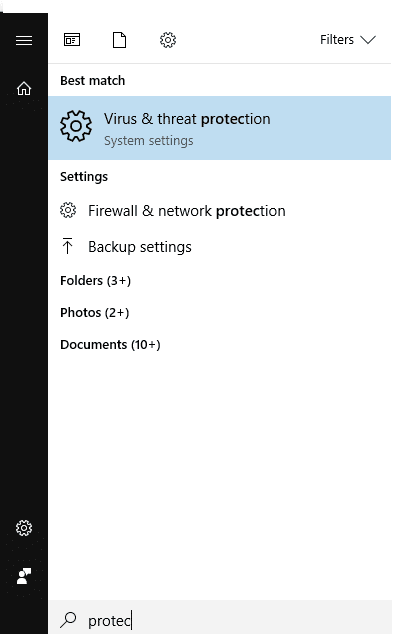
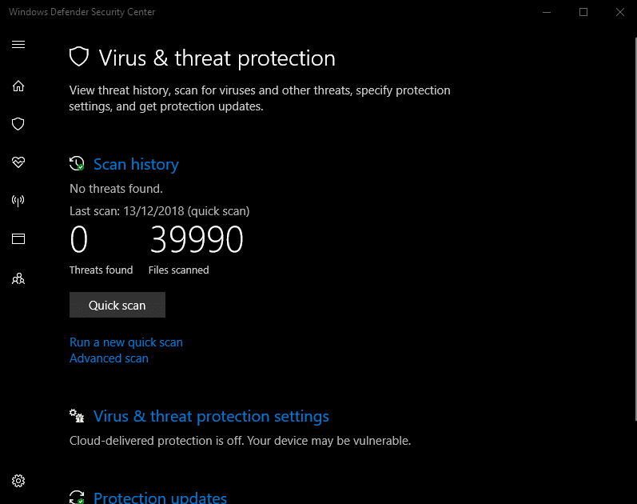
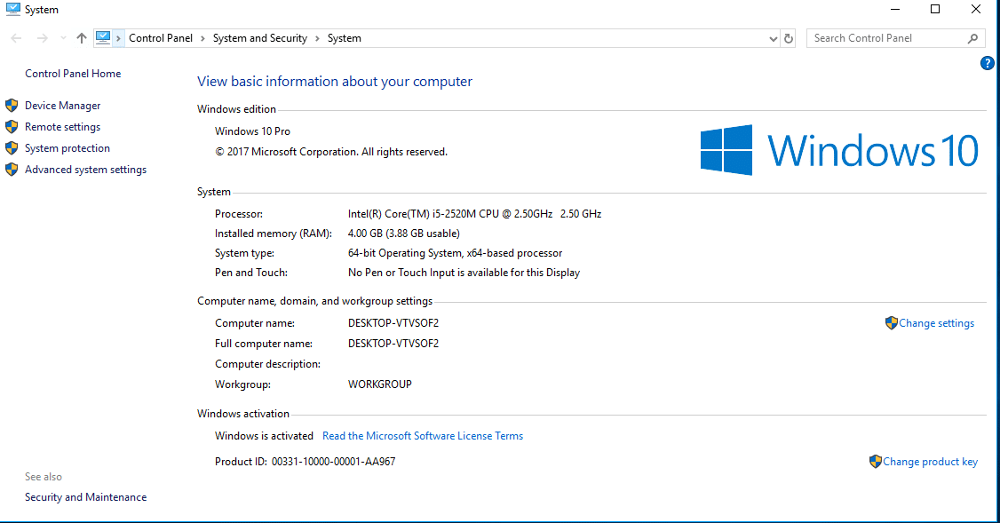

KMSPico is the activator that is used to activate Microsoft Products, such as
Windows and
Office. It is a total virus and malware-free tool trusted by many people.
I personally use it for Windows activation. This amazing activator works without the internet,
and
the installation process is quite simple too.
If you are not getting the Windows update and the premium features for free, then KMSpico is a
handy
tool for activating windows and enjoying these features for free without paying a penny.
This Software was developed by respected TeamDaz and is also known as Windows 10 activator,
they
have also made other KMS tools like KMSAuto, Windows 7 loader which work automatically
they are
going well for us
So if anyone has a problem activating windows just follow this simple guide to learn how you
can do
it easily, also you will find the download link.
[Show]
KMSPico is used to validate the pirated version of Microsoft Windows and MS Offices.
However,
this KMS technology is introduced by Microsoft for mutual gain, without getting exposed
to Microsoft.
KMSPico is also the software of those technologies which doesn’t violate the rules of
Microsoft.
It’s just like a local server that lets every machine use KMS Technology
The tool is not only helpful in getting the license for Windows but it is also used to activate
Microsoft Office as well which is a pretty neat upgrade.
You know that the new versions of MS office are required to be activated to use their full
features.
It comes with some days of trial. When the trial ends you need to activate it to use it again.
That’s why this activator is also helpful for activating it.
When you buy a copy of a Windows or Microsoft product you will get the trial version of
that
product. Some of them consist of keys otherwise they came in the trial versions.
Trial versions are limited to almost 30 days and after the trial period is over you will be forced
to
get the premium version because you will be limited to various features.
When the trial expires you can’t get the update and new features of Windows or MS Office.
In this
case, you need to have an activator so that you can use that product for a lifetime.
KMS Pico is an example of such software that helps you to activate Microsoft products so that
you
can use it for the rest of your life for free.
There are many other tools that are available on the internet which give their users a guarantee
that they will activate them. But most of those activators have trojans and malware that da
This is the best activator because it not only activates Windows but also activates
Office as well.
Here is the list of all the products which Activator Supports:
We will keep updating these features whenever there is an update or have support for a
new
product too.
Downloading KMSPico is not a big deal. I am providing you with a direct link from which you
can download easily without facing any issues.
Let’s now look at the steps of how to download.
That’s all now that you have successfully downloaded it to your computer. Now if you don’t
know how to install and activate your windows you can follow my Installation guide.
INSTALL KMS
As you read all the above information about the tool now here is a full guide on How
you can
download and install the windows activator.
Follow these steps so that you can also enjoy the fully activated windows and ms office for a
lifetime. This is very easy to install and use as an activator.
First of all, you need to turn off the firewall and Antivirus (Don’t worry it’s not a trojan or any
virus. Antivirus blocks it because they know this will activate the windows
Search for the Protection and open Virus & Threat Protection
Now click on Virus & Threat Protection Settings.
And then turn off Real-Time Protection.
After the above steps now Download KMSPico From our website. .
Now a new window will pop up and you will see a red button.
Now you will use all the features of Microsoft Windows and Microsoft Office lifetime.
This video has been removed for violating
YouTube's Terms of Service
It helps you in activating the windows as well as office products. With the help of
this tool, you
can enjoy the activated Microsoft products for the rest of your life without
purchasing them.
Also, it automatically activates the windows when you update it. You don’t need to follow again
those steps for that.
Windows 11 Activator Download & Free
Activation Key
2022
Is KMSpico Safe | How To Use Safely |
Official Site
2022
Microsoft Office 365 Product Key For
Free
[Working 2022]
Windows 8.1 Product Key Free For
32-64Bit
[Aug 2022]
Windows 7 Product Key For All Editions
32-64Bit
[2022]
Windows 7 Product Key For All Editions
32-64Bit [2022]
Windows 7 Activator Download For
32-64bit
[Official 2022]
Windows 7 Activator Download For 32-64bit
[Official
2022]
Windows 10 Activator Download [New Version
Released 2022]